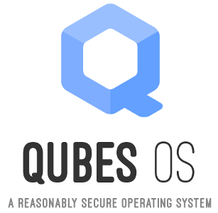

The Operating System That Can Protect You Even if You Get Hacked
This was originally published on the Freedom of the Press Foundation’s blog.
We wrote about the importance of the Tails operating system to all of the NSA journalists last week, but there’s also another little-known operating system that journalists should consider using if they find themselves in high-risk scenarios. It’s called Qubes.
I’ve only been using Qubes for a few weeks, but I feel like my operating system is now a digital fortress. Let me try to explain why, and how Qubes differs from Tails.
Qubes’ design is based off an important law of software: all programs contain bugs. Some of these are security vulnerabilities. Your computer can get hacked by viewing a Flash video or using javascript in your web browser: this is likely how NSA’s QUANTUM/FOXACID programs hack people. Your computer could also get hacked by opening a PDF, or a Microsoft Word or LibreOffice document, or just by viewing a JPG or GIF.
If any piece of software gets compromised, your whole computer is compromised. The attacker can look at your files, log your keystrokes, take screenshots, steal your encryption keys, and read the emails that you type before you even have a chance to encrypt them.
Developers can (and should) try to make their software more secure, but software will never be perfect. Trying to not get hacked is difficult when you have powerful adversaries, yet still have to get work done. Short of never connecting your computer to the internet, the best way to stay secure is to minimize the damage caused when you do eventually get hacked and “sandbox” the most vulnerable programs away from the rest of your computer. Qubes makes this more straight-forward than any other operating system I’ve used.
Qubes uses virtual machines to let you manage separate “security domains”. A virtual machine (VM) is basically a tiny operating system running inside of your real operating system. If your VM gets hacked, the attacker is able to access the files and read keystrokes in that VM, but not in other VMs or on your host computer. In Qubes all software (besides the desktop environment) is running inside of VMs, and you can easily and efficiently make as many as you need for whatever purposes you need. It’s also designed in such a way that if one VM gets infected with malware, the malware won’t be there the next time you reboot that VM.
For example, you may want to use Pidgin, an instant messaging application with OTR encryption capability, to chat with people securely. But Pidgin is notorious for its memory corruption vulnerabilities: the kind of bug that attackers can use to take over your computer by IMing you a weird-looking message. (All publicly known Pidgin vulnerabilities have been fixed if you’re using the latest version, but there’s always the possibility that there are vulnerabilities that have never been reported to the developers. These are called zero day vulnerabilities, and agencies like NSA and FBI spend lots of money to buy information about them.)
In order to use Pidgin as safely as possible, you can create an AppVM (the Qubes word for a VM to run specific apps in) that you use only for Pidgin. If a Pidgin-zero-day-wielding attacker sends you a weird-looking message that takes over your computer, all it will actually take over is your Pidgin AppVM. The worst that the attacker can do is steal your OTR keys and spy on your chat conversations. Everything else on your computer, such as your work documents, your PGP key, and your password database, will remain safe from the attacker.
Another example that would be useful to journalists: if you’re writing an article about sensitive documents, you can create an “air-gapped” AppVM that contains these documents, and any files or drafts associated with the story. If you open a document in this AppVM that tries to phone home to alert someone that it’s been opened, it will fail because this AppVM doesn’t have internet access. And if you open a malicious document that hacks this AppVM, the malware won’t be able to exfiltrate any of your files because it won’t have internet access. And finally, if some other part of your computers gets compromised, like your web browser, the attackers won’t have access to these sensitive work files.
You can also easily use “disposable VMs”, AppVMs that you create for a specific purpose and delete when you’re done with them, to open documents that you don’t completely trust. If that PDF someone emailed you is actually malicious and tries to take over your computer, it will only take over the disposable VM. But if it actually contains something useful, you’ll still be able to read it.
You can do this all on one computer using a single desktop manager. This is one of the most powerful features about Qubes.
You can always choose to isolate software like this on traditional operating systems using tools like VirtualBox or VMWare, but it’s impossible to do as good a job of locking down your computer as you can with Qubes.
Current state of the project
At the moment you have to be pretty tech savvy in order to get the full benefits of Qubes. And it doesn’t hurt if you’re already a Linux nerd. I think this can be improved, but Qubes will never be a “turn on and forget” security tool. Which security domains each user needs is completely dependent on their preferences and security needs. But if you understand your needs and understand how to use and configure AppVMs to fit them, you’ll be able to use your computer with much higher security than if you were using a traditional OS.
The places where usability could be greatly improved is hardware support inside of VMs. I spent hours trying to figure out how to make my laptop’s internal webcam accessible to an AppVM. The solution finally ended up being to give the AppVM control of my USB controller and to change permissions on /dev/video0 to be world-writable inside of the AppVM — at the expense of having access to one my USB ports, and while opening up other USB-related security problems (which normal OSes always have). Hardware issues like this keep popping up for me: USB sticks work fine, but USB ethernet cards don’t; I can’t easily import photos from my Android phone. I have enough patience, googlefu, and Linux experience to solve them, but I think many users would be lost.
Qubes vs Tails?
Qubes and Tails have fundamentally different use-cases. They’re both very important, and I use both operating systems every day.
Tails is for staying anonymous. When you use it on a computer, it doesn’t leave a trace that it was ever booted. It changes your MAC address before you connect to a network, and it forces all traffic to go over the Tor network, ensuring that you don’t make a technical mistake and accidentally leak your IP address. When you use the web browser that comes with Tails, your traffic looks exactly like the traffic of all other Tor users.
Qubes is for staying secure while still being able to use a wide variety of software that might contain zero day vulnerabilities, but it’s not for staying anonymous. Qubes supports cool networking tricks, like making an AppVM where all traffic is forced to go through Tor, but this doesn’t incorporate most of the anonymity tricks that Tails excels at.
Bottom line
For maximum security, I would recommend that people use Qubes on their computer for all their everyday, non-anonymous needs: checking email, chatting, using social media and browsing the web, developing software, doing research, writing articles. Since you do all of this work in AppVMs that run Linux (and optionally some of it in AppVMs that run Windows), you get the latest and best tools to work with, and it’s simple to install new software. For more sensitive needs where anonymity is important, you can use Tor Browser Bundle inside of an AppVM.
And for the most sensitive needs, as the NSA journalists explained, you should boot to Tails.